Guides
Set up Onsite
Onsite needs two things: an AI to run the interview and, for spoken rounds, a voice engine. Pick one of each. You can change either later in Settings, and your interviews stay.
Pick your setup
Each card is a full setup. Follow its steps in order.
Claude Code + built-in voice
RecommendedYou have Claude Pro or Max. Any computer, no GPU.
Groq + built-in voice
FreeNo subscription. A free Groq key and any computer.
Claude Code + VoiceStudio
NVIDIA GPUWindows with an NVIDIA GPU. A different voice for every interviewer, and the most accurate transcripts.
Groq + VoiceStudio
NVIDIA GPUFree AI, with VoiceStudio's voices on your GPU.
Any AI + VoiceStudio in Docker
DockerYou already run containers, or you want VoiceStudio on Linux.
- Install Onsite
- Connect an AI: Claude Code, Groq or a key
- Run VoiceStudio in Docker
- Start an interview
Any AI, typed
LightAn older laptop, a quiet office, or you just prefer to type. Nothing to download.
- Install Onsite
- Connect an AI: Claude Code, Groq or a key
- Switch to typed
- Start an interview
Have a Claude API, OpenAI or Gemini key? Use it in place of Claude Code or Groq in any card: see how.
Install Onsite
Download Onsite for your system from the download section and install it.
- Windows: run the
-setup.exe. SmartScreen may warn because the installer isn't signed yet: press More info → Run anyway. - macOS: open the
.dmgand drag Onsite into Applications. The first time, runxattr -dr com.apple.quarantine /Applications/Onsite.appin Terminal, or use System Settings → Privacy & Security → Open Anyway. Allow the microphone when asked. - Linux:
chmod +x Onsite_*.AppImageand run it, orsudo apt install ./Onsite_*_amd64.deb.
Onsite opens on Settings → AI model the first time. That's the next step.
AI: Claude Code
Use this if you pay for Claude Pro or Max. Onsite runs Claude Code with your own login, so there's no key and no extra cost. It's what Onsite is built and tested on.
- Install Claude Code if you haven't. On Windows, in PowerShell:
irm https://claude.ai/install.ps1 | iex. On macOS, Linux or WSL:curl -fsSL https://claude.ai/install.sh | bash. Full steps: Claude Code setup. - Sign in once. Run
claudein a terminal and log in with your Claude account. Then close it. - In Onsite, open Settings → AI model and pick Claude Code. Onsite finds it by itself. If it says Not found, press Detect again, or paste the path to
claude.exeand press Use this path. - Press Run health check. You should see Working · "OK" after a few seconds.
- Pick the models. Sonnet for the interviewer (fast replies), Opus for feedback and research (best judgment).
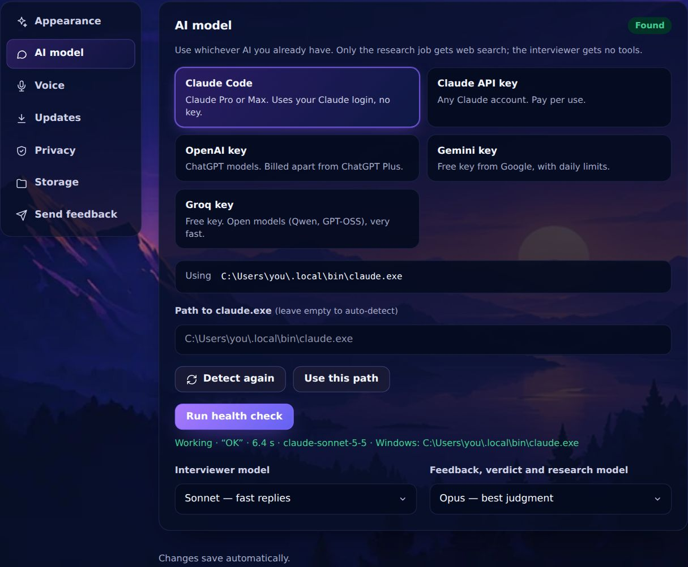
Claude Code only in WSL (Windows)
If you installed Claude Code inside WSL and not on Windows, that works too. Onsite looks on Windows first, then asks WSL. The path shows as WSL: claude. Make sure claude runs in a fresh WSL terminal (it must be on the login shell's PATH).
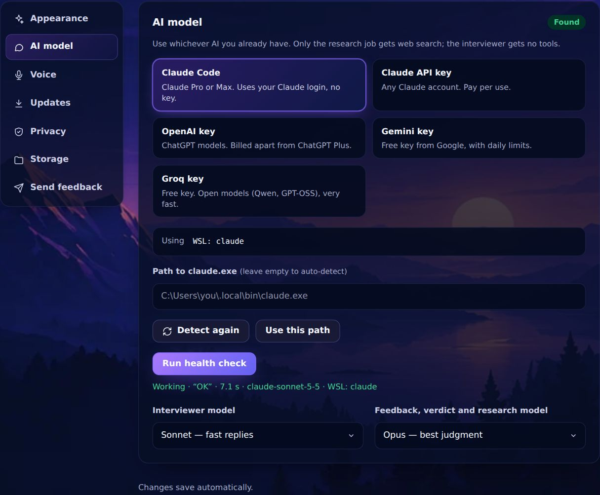
Each reply takes a few seconds on Claude Code, so spoken rounds feel a little slower than on an API key. Company research takes 10-40 minutes.
AI: Groq (free)
Groq gives a free key and is the fastest option: the first words arrive in about half a second.
- Get a key. Sign in at console.groq.com/keys and press Create API Key. Copy it; it starts with
gsk_. - In Onsite, open Settings → AI model, pick Groq key, paste the key and press Save key.
- Press Run health check.
- Keep the default models: Qwen 3.8 27B as the interviewer (asks the best follow-ups) and GPT-OSS 120B for feedback and research (it can search the web).
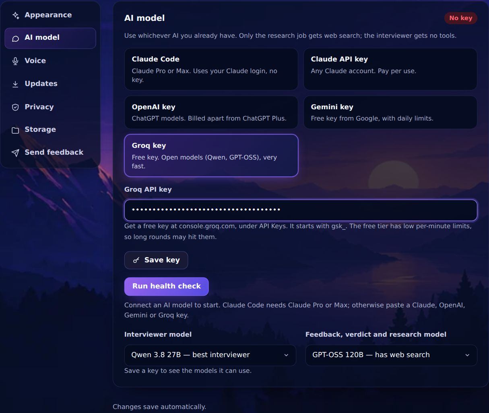
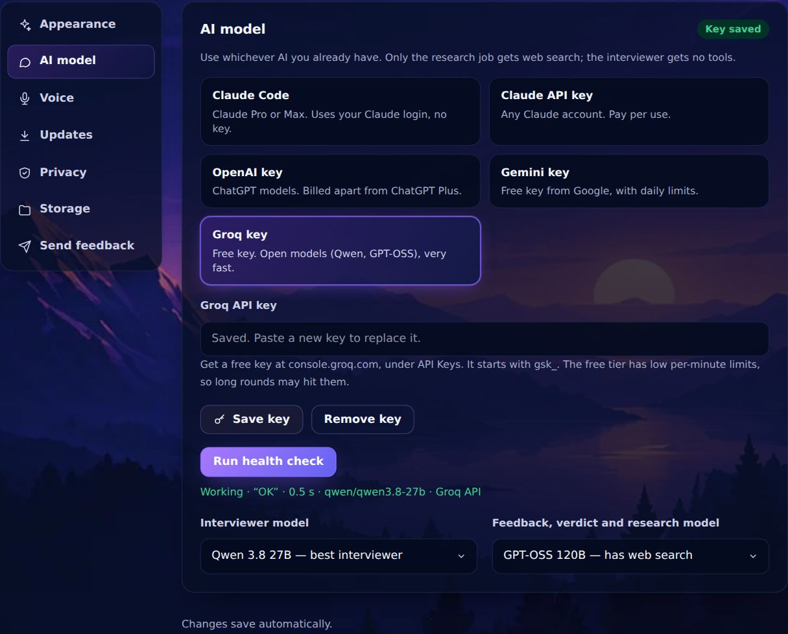
Free-tier limit. Groq's free tier allows 8,000 tokens a minute. Coding rounds send a lot per turn, so after quick back-and-forth the interviewer may wait up to 30 seconds before replying. Onsite waits it out by itself. Slow down a little, or use a paid key, if it happens often.
AI: Claude API, OpenAI or Gemini key
Same steps as Groq: pick the provider in Settings → AI model, paste the key, press Save key, then Run health check. Keys stay in Onsite's local database and are never sent anywhere except that provider.
| Provider | Where to get a key | Cost | Good to know |
|---|---|---|---|
| Claude API | console.anthropic.com → API keys (starts with sk-ant-) | Pay per use | Works without Pro. Sonnet to interview, Opus for feedback. |
| OpenAI | platform.openai.com → API keys | Pay per use | ChatGPT Plus doesn't cover API use; add a little credit. |
| Gemini | aistudio.google.com → Get API key | Free tier | The free tier uses Flash models, with daily limits. |
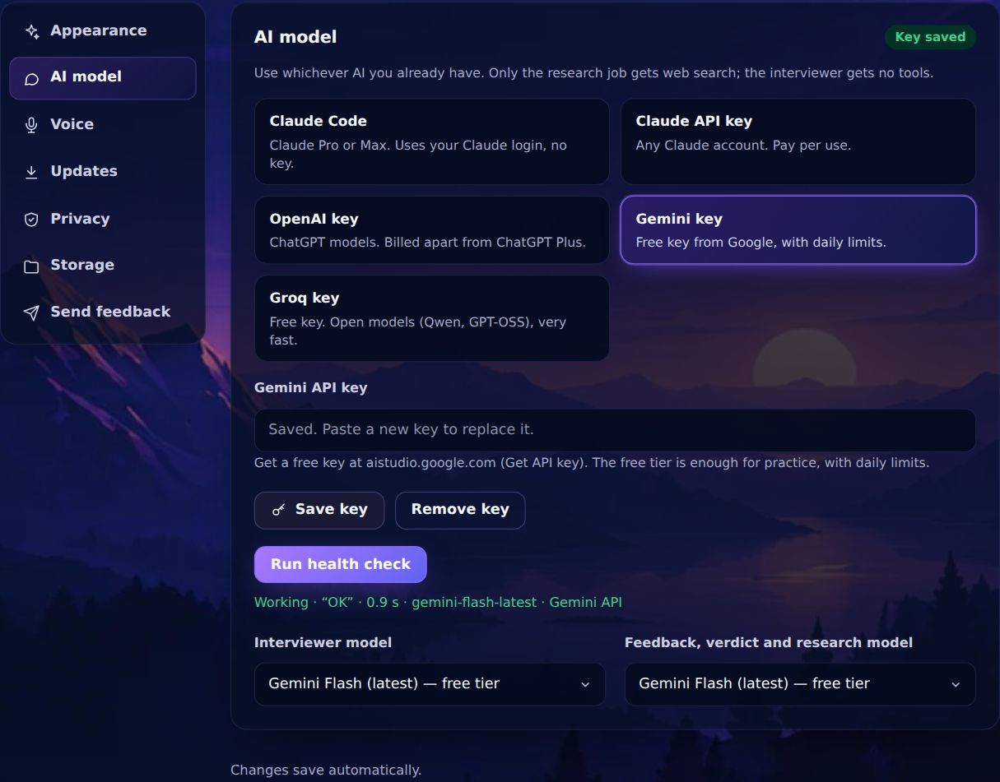
Voice: built-in
The default. Speech runs inside Onsite on your CPU: Pocket TTS speaks and Parakeet listens. No GPU and no other app. After one download it works offline.
- Open Settings → Voice. Engine should read Built-in.
- Download both models (about 580 MB, once; have 1.6 GB free while it unpacks). They come from GitHub.
- Pick your mic and speaker. A headset works best: it stops the interviewer hearing itself.
- Press Test voice and Test mic. The bar should move when you talk.
- Set the pause. "Send my answer after I stop talking for" 3 seconds suits most people. Pick "Never" to end each answer with a tap.
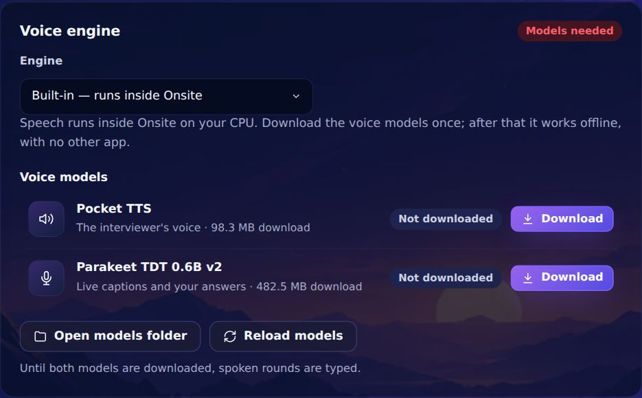
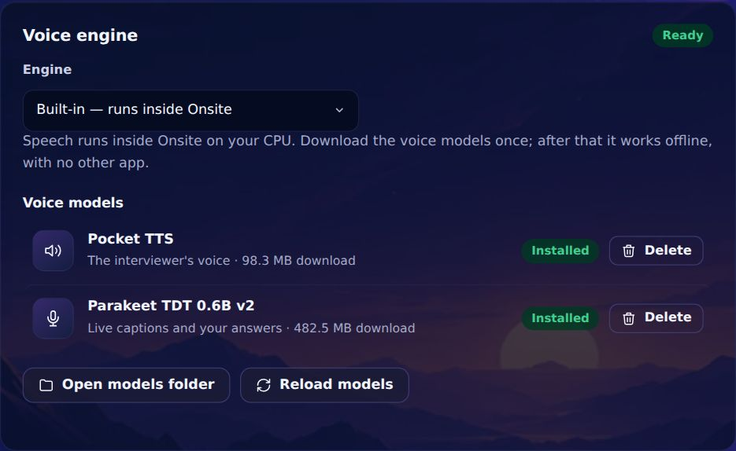
Two voices: Ethan (American) and Charlotte (British). Interviewers use the one that matches them. Panels whose interviewers have Indian accents need VoiceStudio; Onsite says so when you pick one. If the interviewer pauses mid-sentence, your CPU is struggling: pick Listen & type on the Get ready screen.
Voice: VoiceStudio
VoiceStudio is a separate open-source desktop app. Onsite talks to it on your own machine (127.0.0.1:3900). Every interviewer on a panel gets their own voice. On Windows with an NVIDIA GPU, Onsite also runs each answer through Whisper large-v3, which gets terms like Redis and idempotency key right.
- Install VoiceStudio from its releases page and open it once. Let it download its models.
- In Onsite, open Settings → Voice and set Engine to VoiceStudio (separate app).
- Start VoiceStudio if it isn't running. Onsite shows a Start VoiceStudio button when it's installed but closed. Its backend takes about a minute to load; the pill turns Ready.
- Test voice and Test mic, as for the built-in engine.
- Hear the interviewers: Settings → Appearance → Interviewers → Play voice. Each voice is built the first time you play it (5-15 seconds), then stays the same.
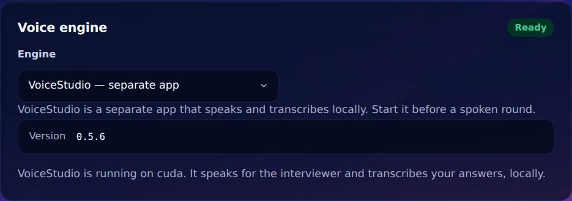
The first spoken line after starting VoiceStudio can take up to a minute while it loads its weights. Onsite warms it up while the room gets ready. VoiceStudio unloads after about 15 idle minutes; the next round warms it again.
Voice: VoiceStudio in Docker
Not tested end to end yet. These steps follow VoiceStudio's Docker guide and how Onsite talks to VoiceStudio. If something doesn't work, tell us with Settings → Send feedback.
Run VoiceStudio as a container and point Onsite at it. Onsite always uses http://127.0.0.1:3900, so publish that port on the same machine. You need Docker (Docker Desktop on Windows) and, for an NVIDIA GPU, the NVIDIA Container Toolkit. Docker Desktop on Windows includes GPU support through WSL 2.
1. Make an admin key and start the container
The image needs an admin key. Onsite reads the same key from the OMNIVOICE_API_KEY environment variable, so set it for your user too.
Windows (PowerShell):
$key = -join ((48..57) + (65..90) + (97..122) | Get-Random -Count 40 | ForEach-Object { [char]$_ })
setx OMNIVOICE_API_KEY $key
docker run -d --name omnivoice --restart unless-stopped --gpus all `
-p 127.0.0.1:3900:3900 `
-e OMNIVOICE_API_KEY=$key -e OMNIVOICE_TRUST_HOST_LOOPBACK=1 `
-v omnivoice-data:/app/omnivoice_data `
ghcr.io/debpalash/voicestudio:stableLinux:
export OMNIVOICE_API_KEY=$(python3 -c 'import secrets; print(secrets.token_urlsafe(32))')
echo "export OMNIVOICE_API_KEY=$OMNIVOICE_API_KEY" >> ~/.profile
docker run -d --name omnivoice --restart unless-stopped --gpus all \
-p 127.0.0.1:3900:3900 \
-e OMNIVOICE_API_KEY -e OMNIVOICE_TRUST_HOST_LOOPBACK=1 \
-v omnivoice-data:/app/omnivoice_data \
ghcr.io/debpalash/voicestudio:stable- No NVIDIA GPU? Drop
--gpus all. It runs on the CPU, but slowly; the built-in engine is faster there. AMD GPUs use the:stable-rocmimage (see VoiceStudio's guide). - Keep
127.0.0.1in the port mapping, so only this computer can reach it. OMNIVOICE_TRUST_HOST_LOOPBACK=1lets this computer use it without VoiceStudio's share PIN. Use it only on a single-user machine.- On a Mac, use the VoiceStudio app or the built-in engine: containers can't use the Apple GPU.
2. Wait for it to load
The first start downloads about 2.4 GB of models. Follow it with docker logs -f omnivoice. It's ready when curl http://127.0.0.1:3900/health (on Windows, curl.exe) returns 200 with "status", "device" and "version".
3. Connect Onsite
- Restart Onsite after setting the environment variable (on Linux, log out and in again, or start Onsite from that terminal).
- Settings → Voice → Engine: VoiceStudio (separate app). The pill turns Ready and the device shows cuda (or cpu).
- Press Test voice and Test mic.
With Docker, Onsite can't start or stop VoiceStudio for you (no Start button), and the Whisper accuracy pass doesn't run: it needs the Windows VoiceStudio app's own Python. Transcripts come from Parakeet. Update the container with docker pull ghcr.io/debpalash/voicestudio:stable, then remove and run it again; the omnivoice-data volume keeps its models and voices.
No voice: typed
Every round works typed. Nothing to download, and it runs on any 64-bit computer with 4 GB of RAM.
- Open Settings → Voice → Speaking and listening.
- Under How you answer, pick Typed (chat only), or Listen & type (the interviewer speaks, you type).
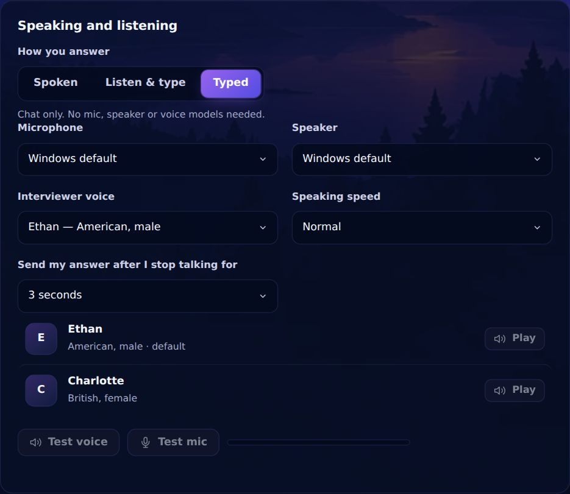
You can also switch for one round on the Get ready screen. If voice can't start, a round goes typed instead of failing.
Your first interview
- Open Interviews. Pick General practice to start now, or Company-specific to run a company's real loop (research it first in Dossiers).
- Set your context: company style, interviewer style, level and coding language.
- Choose your rounds. Start with one or two.
- Add your resume (PDF, Word or text) and, if you have one, the job description. The questions follow them.
- Press Start interview.
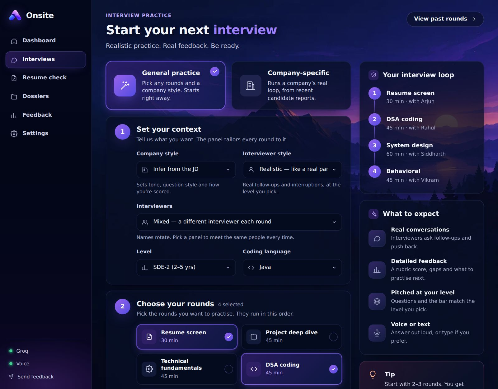
The code comprehension round shows a small project with hidden bugs. The AI writes it for your job description, or you can choose one of eight ready-made projects (Java, Python, JavaScript, Go). Onsite asks before the round starts. Generated code is never run, so a planted bug can occasionally be wrong.
Get ready
Check your mic and speaker, choose Spoken, Listen & type or Typed, and press Join interview. Onsite then gets the room ready: the AI, the voice and the mic. That takes a few seconds.
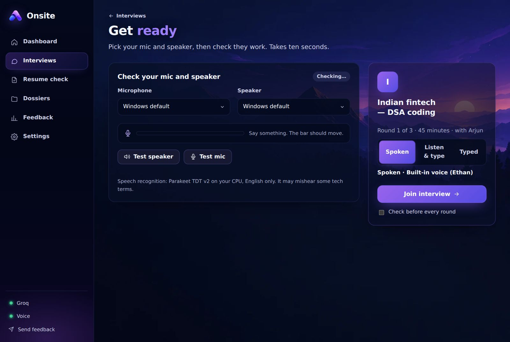
In the room
Talk like it's real: think out loud. Write code in the editor and press Run or Submit. Draw designs on the whiteboard. Press Share now to show the interviewer your code, drawing or notes. The interviewer ends the round when time's up; End interview ends it early.

The report
Settings → About explains why Onsite exists, links to the MIT licence and the credits. Onsite is free and open source.
After the round you get a score, a hire signal, a rubric with evidence, and stronger answers for the key moments. Start with Fix this first. Finish a whole loop for a hiring-committee verdict.
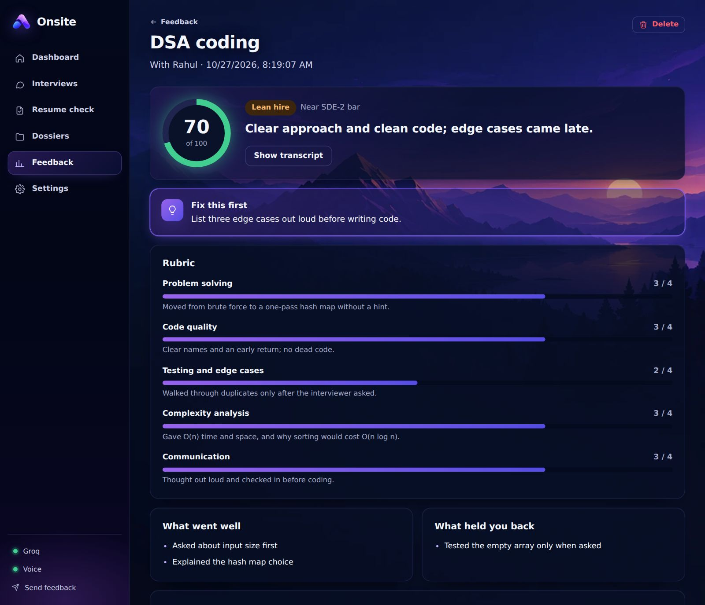
When something's off
| What you see | What to do |
|---|---|
| Claude Code: Not found | Run claude in a new terminal to check it's installed and signed in. Then press Detect again, or paste the path to claude.exe. |
| Health check fails with a key | Paste the key again (no spaces), press Save key. For OpenAI, check your account has credit. |
| Interviewer pauses before replying (Groq) | The free tier's per-minute limit. Onsite waits and carries on. It happens less in talk-heavy rounds than in coding rounds. |
| Round goes typed | The voice engine wasn't ready. Built-in: download both models. VoiceStudio: start it and wait for Ready. |
| Mic bar doesn't move | Pick the right microphone on Get ready. On macOS, allow Onsite in System Settings → Privacy & Security → Microphone. |
| My answer gets cut off | Set "Send my answer after I stop talking for" to 5 seconds, or Never and tap to finish. |
| VoiceStudio in Docker: Not running | docker ps should list omnivoice. /health returns 503 while it's still loading. Check the port is 127.0.0.1:3900. |
Still stuck, or something felt off? Open Settings → Send feedback in the app. It takes about two minutes, and every response is read. Bugs can also go to GitHub issues.
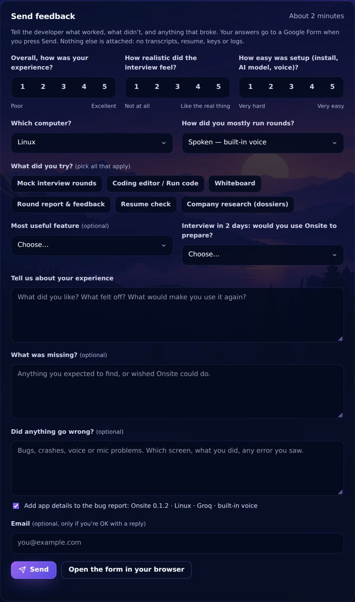